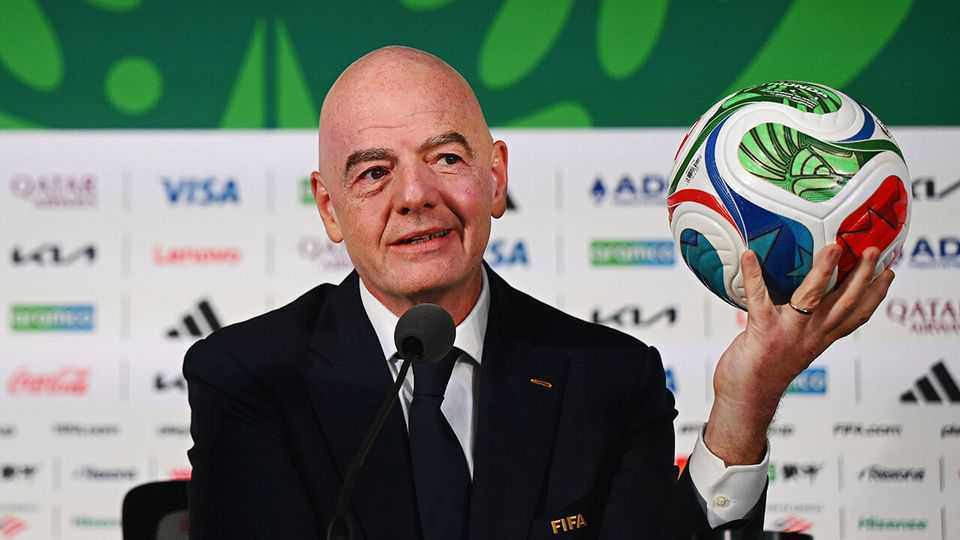

Selling stakes in the beautiful game. What could go wrong?
FIFA’s plan to tap private investors is causing outrage

Jul 30th 2026
Football stirs heated passions. But Gianni Infantino, president of FIFA, pushes them to boiling point. On July 28th football’s governing body unveiled plans to raise $4.2bn by selling stakes in the running of future tournaments to private investors. UEFA, which oversees European football, protested that the game “is not FIFA’s to sell”. A source close to UEFA says that if the plan goes ahead, it may boycott future World Cups.
Hot on the heels of a tournament that generated up to $15bn in revenue (and one especially contentious red card), FIFA said it intends to set up a subsidiary that would consolidate its commercial operations. Those include broadcasting, sponsorship, ticketing and licensing, as well as the staging of men’s and women’s World Cups. Called FIFA Forward Enterprise (FFE), it would be valued at $20bn. The sale of a roughly 20% stake would boost funding for FIFA’s 211 national member associations, a majority of which must approve the plan.
Joshua Kushner, founder of Thrive Capital, an investment firm, is in talks to lead the funding round. He is the brother of Jared Kushner, President Donald Trump’s son-in-law. Jared reportedly would have no investment in FFE, but the family connection has given fresh ammunition to Mr Infantino’s critics, who bristle at his close relationship with Mr Trump. On X, a social-media platform, a group of Democrats described FIFA as Mr Trump’s “favourite corrupt racketeering enterprise in world sports”, and accused it of going “directly into business with the Trump family”.
UEFA is understood to be holding talks with other football bodies, as well as concerned governments, to plot its counter-attack. Andy Burnham, Britain’s new prime minister, weighed in, declaring that “Football does not belong to investors” (though his favourite team, Everton FC, is owned by an American billionaire).
The introduction of private investment into the governing bodies of sports is not new. One of the architects of the deal is Greg Maffei, former chief executive of Liberty Media, who led its $4.4bn acquisition of Formula One in 2017 and helped turn a fading motorsports franchise into an entertainment juggernaut. Another example is PGA Tour, golf’s most important event organiser, which set up a commercial arm in 2024 backed by private investors.
FIFA says it will retain full authority over competitions, match calendars and other decisions. But the experience of PGA Tour suggests that private investors may end up putting their thumbs on the scale, reckons Sam Nursall of Ampere Analysis, a media-research firm. He notes that outside money may help FIFA spend more in poorer places, but that the quest for profit may also push it towards locating future World Cups in the most lucrative countries, having more frequent tournaments and possibly raising ticket prices.
Thrive Capital’s investment in FIFA is being channelled through Thrive Eternal, a vehicle that can hold assets indefinitely, unlike conventional venture-capital or private-equity funds. That may make it less inclined to seek changes that generate a quick profit but alienate fans over the long term. Even so, it will have an interest in FIFA milking the sport for more money. A person close to the firm says it is counting on the value of its stake rising as FFE takes an increasingly commercial approach to selling broadcast and other rights.
Thrive Capital is perhaps best known as one of the biggest backers of OpenAI. Its sizeable stake in the artificial-intelligence lab, and its belief in the disruptive power of the technology, may help explain its interest in live sports. A source close to the investment firm says it has been hunting for businesses that are likely to retain their value in a world of widespread AI. “If you consider it from the perspective of things that will remain human as Ai becomes more abundant, global football is a pretty good bet,” argues the source. Still, Mr Infantino and his money-men will have to keep the crowd on their side. ■